Case study 02 · Webjet (ASX:WEB)
Six rounds of testing, two of which proved me wrong
Rebuilding flight search for mobile, starting from agency wireframes the flight API couldn’t serve. This is the honest version, including the round where I added a loading screen to content that was already loaded.
Where it started: two mobile products that had drifted apart
Webjet served smartphone customers through a mix of independent mobile sites, responsive sites and a native iOS app — built at different times, sometimes by different teams, with no in-house designer across any of them. Flight search looked and behaved differently depending on which one you happened to land on.
The inherited pattern had a real problem underneath the inconsistency: every cabin class got its own top-level card. One flight could occupy four cards in a scrolling list, which made the results page look like it had four times as many flights as it did. Expanding a card to reveal fare types was the one part worth keeping.
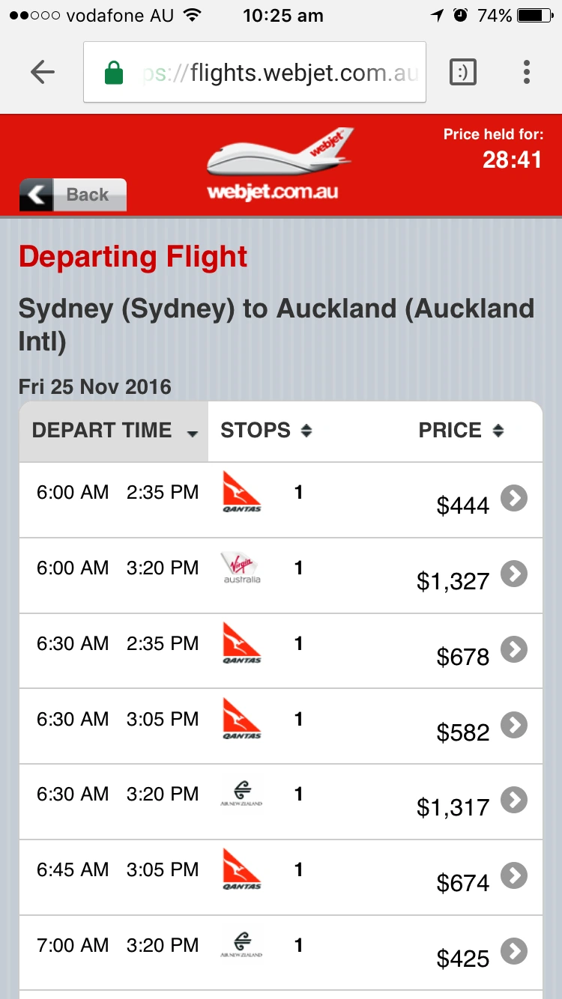
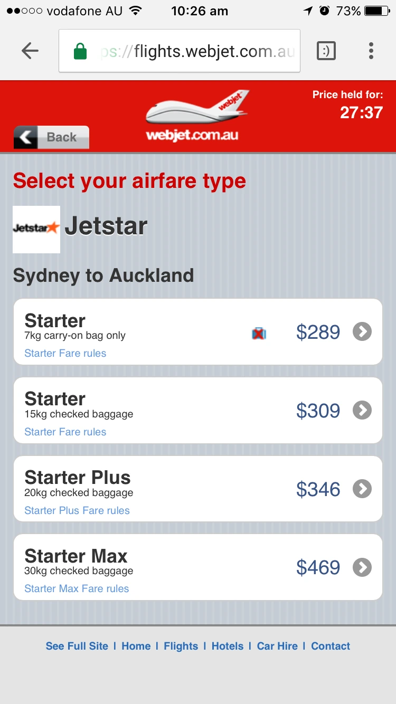
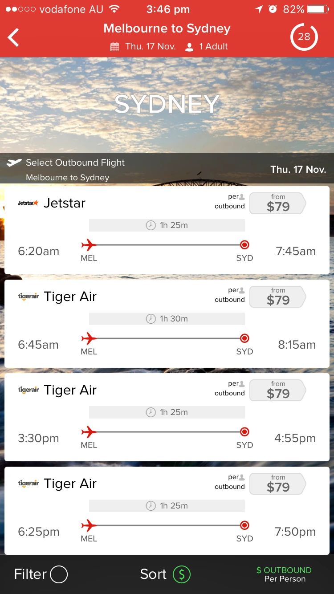
The constraint nobody had costed
An external agency had produced wireframes before I was involved. They were well considered as interaction design — and largely unbuildable.
Webjet retrieved flight results in a single API call. A meaningful share of what the wireframes showed simply wasn’t in that payload, and fetching it would have meant additional calls the MVP had no budget or latency headroom for. The wireframes also leaned on iconography to communicate fare differences, which was both ambiguous to customers and more front-end work than the release could absorb.
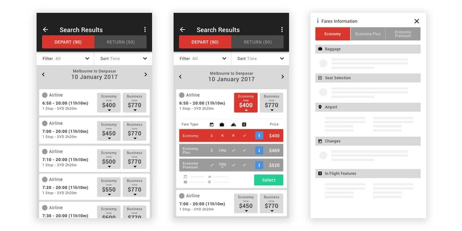
Decision: adapt rather than reject
The politically easy move was to bin the agency work and start again. Instead I kept what the payload supported — cabin classes visible per flight was genuinely necessary — and rewrote the rest against the actual data contract. Ten years of shipping production code is why I could tell which was which in an afternoon rather than three sprints into build.
Getting to something worth testing
Two wireframe passes before anything went near a user.
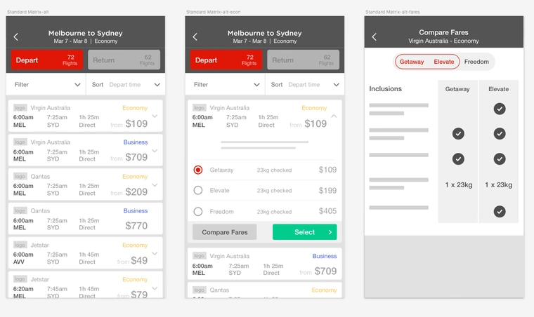
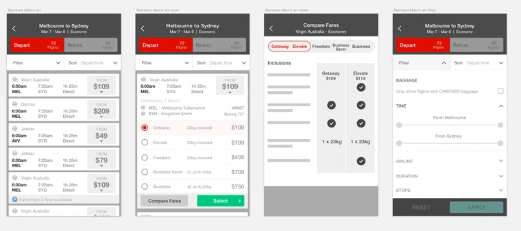
That second pass fixed the four-cards-per-flight problem: one flight, one card, cabin classes revealed on expansion. It also introduced grouping paired fares separately at the top level — a new approach that came directly out of the desktop paired-flight research running in parallel.
From there, high-fidelity mocks and clickable prototypes. Marketing and Product requirements went in at this stage — a featured airline slot, fare rules — and the out-of-scope ‘compare fares’ button came out for MVP.
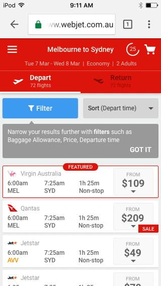
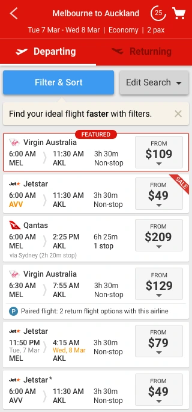
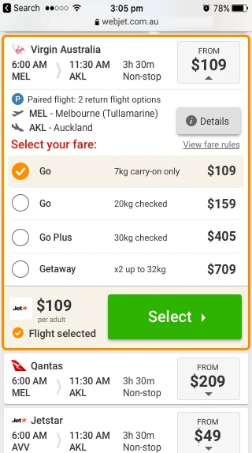
Design system, doing its job
Buttons, notifications and the ‘Selected Orange’ state for an expanded card all came straight from the UI Pattern Library I’d founded the year before. That meant zero specification debate on those elements, and the front-end team could build the results page from existing snippets. A design system pays for itself in the projects it makes boring.
Density, hierarchy, and seven kinds of card
Travel products are information-dense, and a phone gives you one column. Almost all the craft here went into deciding what earns its pixels.
- Visual hierarchy, deliberately ordered — departure and arrival times outrank duration; duration and stop count outrank stop location and layover length. Size, weight, position and contrast set to match that order rather than to look balanced.
- Repetition removed — departure and arrival airports hidden unless the airport was non-primary, since the customer already told us the route.
- Real-world edge cases surfaced — ‘via’ city names, layover times, and explicit next-day-arrival flags, because arriving on a different date than you assumed is the kind of surprise that generates a refund request.
- Card height cut so more flights fit above the fold.
- Seven card types identified and designed: featured, sale, non-stop, with stops, non-standard airport, next-day arrival, and operated by another carrier — plus the combinations.
The UI dev team fed back on the near-final design and I took most of it: full-height price box, duration and stops onto a single line, airport codes dropped to save width, more vertical padding. All of it made the component easier to build and easier to scan, which is usually how that conversation goes if you have it early enough.
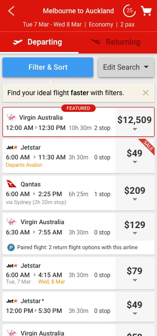
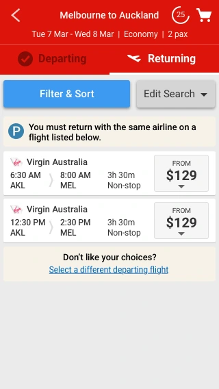
Six rounds of remote usability testing
Three scenarios in round one — one-way, wanted paired flight, unwanted paired flight — then two per round after that. Two problems refused to die for three straight rounds, and one of my fixes made things measurably worse.
Eight findings, one of them structural
What happened
- The header wasn’t sticky, so the Filter button scrolled out of sight exactly when people wanted it
- Most participants wanted to filter and sort — but many reached for Edit Search first, not the blue Filter & Sort button
- Wayfinding was weak: the departing-to-returning transition was an abrupt fade, and tabs alone didn’t tell people which leg they were choosing
- A couple of participants wouldn’t even expand a Paired Flight card — they read it as offering less choice
- ‘Select ›’ didn’t read as the route to paired returning flights
- FEATURED broke people’s model of the sort order — if the list is sorted by price, why is this one first?
What I changed
- Made the header and filter sticky
- Pulled the returning flight details into the same card, so people didn’t have to leave results — mirroring desktop matrix
- Started experimenting on FEATURED: dividing line, then a red tint, then a rename
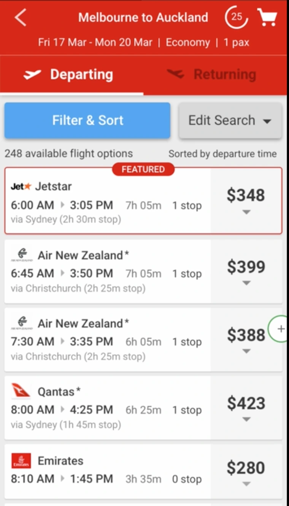
The reversal
What I changed
- Sticky header; tinted FEATURED background; single-card paired flight; explicit ‘Departing Flight’ / ‘Returning Flight’ headings on expanded cards
- Removed the count of paired returning flights, on a hunch that hiding a small number would encourage engagement
What happened
- FEATURED confusion: unchanged
- Which-leg-am-I-on confusion: unchanged, despite the sticky header
- The single-card paired flight flow was worse. Information overload, no clarity on what to do if the return flight wasn’t wanted, and participants trying to un-tick items to escape
- Hiding the count changed engagement not at all — so it went straight back in
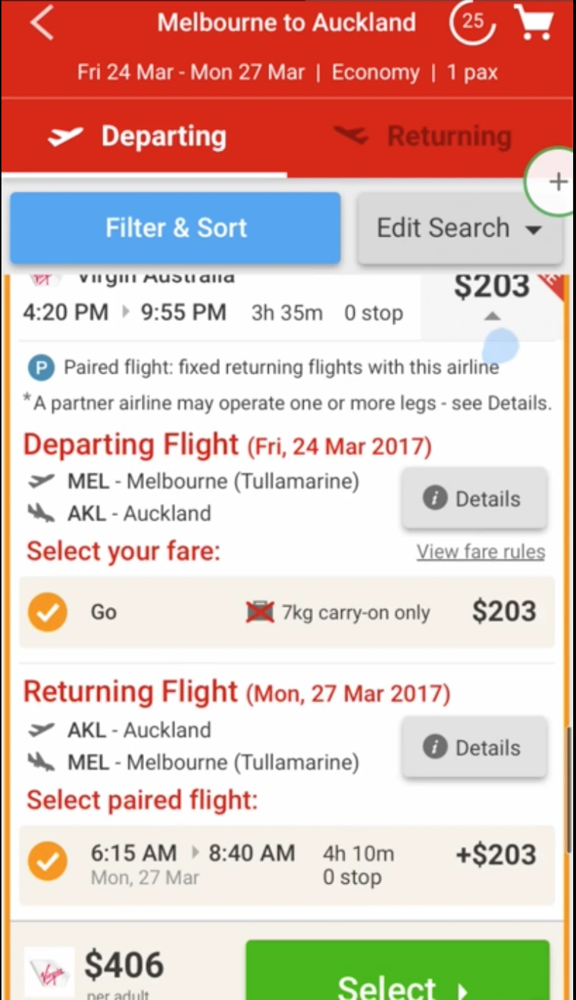
Explaining harder, again
What I changed
- Removed the depart/return tabs entirely
- Added an imperative at the top of results telling people what to do
- Added explanation and instructions to the expanded paired flight card
What happened
- FEATURED: still confusing
- Which leg am I on: still confusing, imperative or not — because it scrolled away
- Paired flight flow improved…
- …but still poorly understood. Not an acceptable place to stop
The call
- Abandon the single-card experiment and revert to the original paired flight flow, then fix it with header changes, screen transitions and clearer next-step labelling
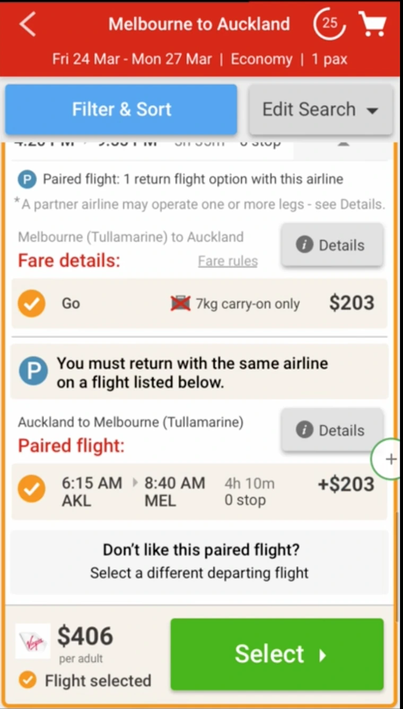
Both long-standing problems solved
What I changed
- Rebuilt the header: sortable column titles, the imperative, and the date — permanently visible
- FEATURED renamed PROMOTION
- Paired flight reverted to the original flow; ‘Select’ became ‘Continue’
- Swapped the positions of Filter and Edit Search to match where people actually reached
- Added loading screens between the departing and returning steps — even though the content was already loaded
What happened
- FEATURED / sort-order confusion: eliminated. One honest word did what three rounds of tinting and dividing lines couldn’t
- Which-leg confusion: eliminated. A single always-visible imperative in the header focused people on the current task instead of asking them to hold a two-step model
- Paired flight experience greatly improved
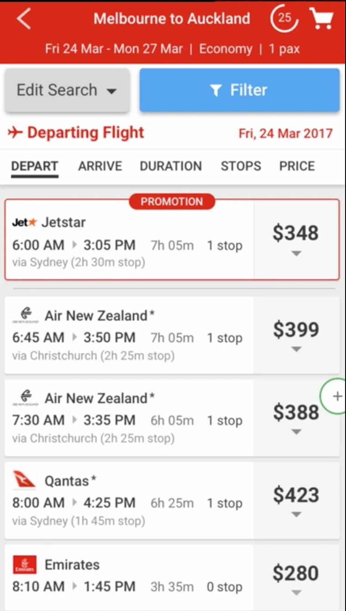
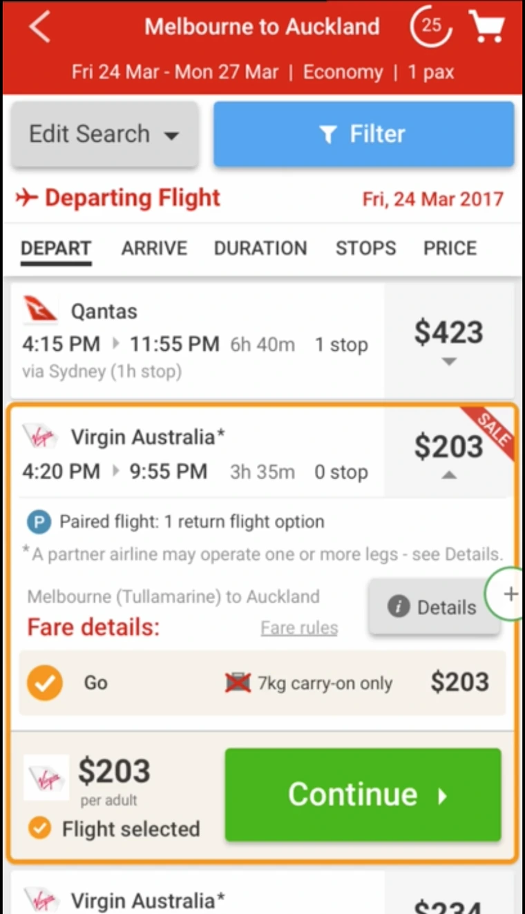
Carrying context forward
What I changed
- Edit Search and Filters moved to a floating footer that shows and hides itself as cards expand
- The selected departing flight now displayed on the returning results screen
What happened
- Confusion about which flight had been chosen in the previous step: eliminated
- Paired flight clarity improved again
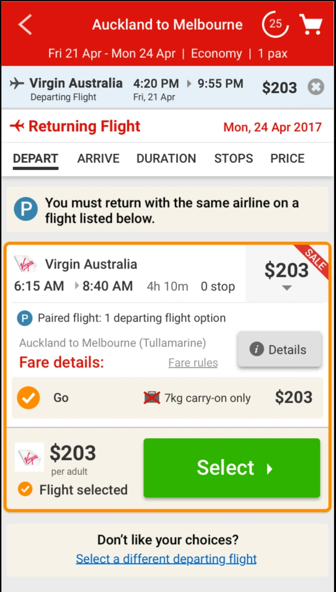
Last-mile language
What I changed
- Paired-flight icon added to the selected flight strip
- ‘Don’t like your choices?’ became ‘Want more flight options?’ with a clear back arrow and call to action
- ‘Paired flight:’ prefix added to the explanation text
What happened
- Paired flight clarity improved further. The negative framing had been quietly implying the customer had made a mistake; the positive framing reads as an offer
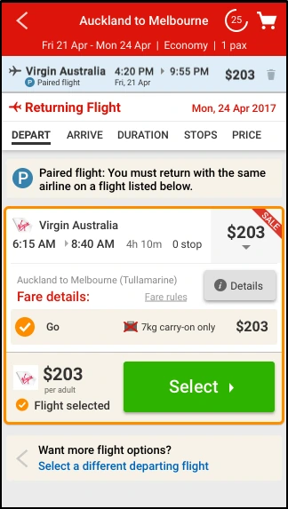
The design that shipped
Sortable column headers with the imperative and date pinned above them. PROMOTION instead of FEATURED. Paired flights on the original flow with clearer labelling. Filters and Edit Search in a floating footer that gets out of the way. The selected departing flight carried forward so nobody has to remember it.

Outcome
Both confusion points that had survived three rounds of iteration were eliminated, and the paired-flight experience went from “participants trying to un-tick things to escape” to a flow people completed unaided. Seven card types and every paired-flight variant flow were specified and handed to build with pattern-library components already in place.
What I learned
Five things I took from this
- Sometimes the right move is to undo your own work. The single-card paired flight was my idea, I’d argued for it internally, and it tested worse twice. Reverting in round four is what made rounds four, five and six productive. Having six rounds budgeted is what made reverting survivable.
- People expect a transition even when there’s nothing to wait for. The content was already loaded, and the instant switch between departing and returning left people unsure whether anything had happened. Adding an artificial loading screen fixed a comprehension problem, which is a genuinely counterintuitive result and one I’ve reused since.
- One honest word beats three rounds of visual treatment. I tried a dividing line, then a red tint, then a background change on FEATURED. Renaming it PROMOTION solved it immediately — the problem was never contrast, it was that the label made a claim about ordering it couldn’t support.
- Negative framing implies the customer erred. “Don’t like your choices?” put people on the back foot. “Want more flight options?” reads as an offer. Same link, same destination, different relationship.
- Get engineering into the design before it’s finished. Every piece of dev-team feedback on the near-final card — full-height price box, single-line duration and stops, more padding — made the component both cheaper to build and easier to read. That only happens if you show them work you’re still willing to change.